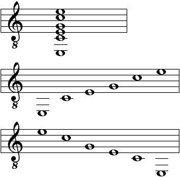
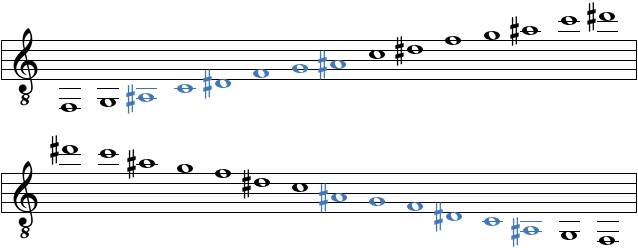

Regarding the Notes View you can set the following preferences:
Here you can specify how the musical notation of a chord shall be displayed. You can choose between a block mode as well as an ascending or descending arpeggio mode.

Here you can specify how the musical notation of a scale shall be displayed. You can choose between an ascending or descending arpeggio mode. Besides, you can specify whether the whole scale or only the currently selected scale block shall be shown.

Here you can specify the tone range of the shown notes of a selected scale. You can choose between the tone range of the active instrument, the complete tone range as well as a user-defined setting.